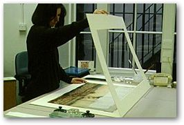

Mounting works of art on paper
The Mounting
Studio, within the Department of Conservation, has recently been refurbished.
Staff are responsible for the mounting of works of art on paper for the
British Museum's antiquity departments. Working mainly for the Departments
of Prints and Drawings, Oriental Antiquities and Japanese Antiquities,
the skilled team of mounting technicians produce a variety of mounts for
works ranging from watercolours, Old Master drawings and photographs,
to sketchbooks, Indian miniatures and sets of prints.
A wide range of techniques is employed to provide the most appropriate protection for works in the collections, and the highest quality materials are used in order to ensure their long term safety by helping to provide them with a stable environment.
Sensitive
use of a range of conservation mounting techniques enables works to be
appropriately housed for display, transportation and storage and allows
them to be safely handled by both museum staff and visiting scholars.



top:
New Conservation Mounting Studio, opened July 1997
above:
Concertina mount for a set of six Japanese woodblock prints
above
right: Animated aperture for 17th-century drawing by Pietro da Cortona
left:
Overthrow mount